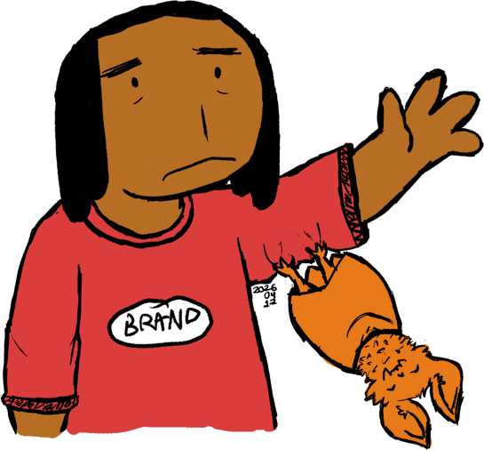

This is badbunsen.com
*well... it was badbunsen.com...

Badbunsen is a site by Aleph Diallo (me) that catalogs his personal works and professional portfolio. He is currently a high school sophomore majoring in graphic design, mainly thanks to his love for drawing and illustration. During his spare time, he creates character designs and writes code for websites like this one.
If you're confused about how this website is laid out, PLEASE read everything below. If you think you can figure it out, though, feel free to skip it and head into whichever section you want.
Next to this box (hopefully) is a scrollbar. In most cases, the scrollbar is there so you can scroll through pages like this without losing track of the navigation links to the side (the big grayish box next to the separator).
This site is comprised of three sections. The "who" section doubles as the homepage and the about page. You are currently within this section. The "what" section contains anything and everything on this site that doesn't describe me or links to where I can be contacted. Mostly artwork, but other than that anything goes. The "where" section links to my contact handle (in regards to this website and my work) and other sites where I can be found.
I'll admit that this site is far from perfect, but its goal is to be a playground for whatever I'd like to do first and a portfolio second. I hope to accomplish these two things successfully.
Here are some webrings this site is a part of. Maybe you'll find something cool.